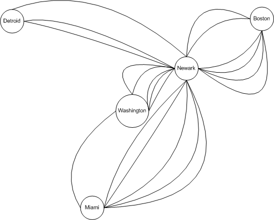
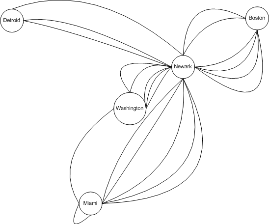

Вежба 1. Нацртај ги моделите на граф, наведи го името на графот според
табела 1, кој ги претставува авионските рути каде секој ден има четри лета од Boston до
Newark, два лета од Newark до Boston, три лета од Newark до Miami, два лета од Miami до
Newark, еден лет од Newark до Detroit, два лета од Detroit до Newark, три лета од
Newark до Washington, два лета од Washington до Newark и еден лет од Washington до Miami
со:
a) со ребро помеѓу јазлите кои ги претставуваат градовите кои имаат лет меѓу нив.
Решение
Едноставен неориентиран граф

Решение
Мултиграф
Решение
Псеудограф
Решение
Ориентиран мултиграф

Вежба 2. Со употреба на директен доказ да се
покаже дека сумата од два парни цели броја е парен број.
Треба да се докаже дека ако имаме дава парни броја нивната
сума е парен број. Да претпоставиме дека `a` и `b` се два
парни броја. Потоа ќе претпоставиме дека постојат целите
броеви `s` и `t` такви да `a = 2s` и `b = 2t`. Со нивно
собирање се добива `a + b = 2s + 2t = 2(s + t)`. Бидејки ова
претставува 2 помножено со цел број докажавме дека `a + b` е
парен број.
Решение
Вежба 3. Со употреба на директен доказ да се
покаже дека квадратот на непарен број е непарен број.
Треба да се докаже дека ако имаме непарен број неговиот
квадрт е непарен број. Да претпоставиме дека `a` е непарен
број. Потоа ќе претпоставиме дека постои целиот број `k`
така да `a = 2к + 1`. Со квадрирање добиваме `a^2 = (2k +
1)^2 = 4k^2 + 4k + 1 = 2(2k^2 + 2k) + 1`. Бидејки ова
претставува 2 помножено со цел број плус еден, докажавме
дека `a^2` е непарен број.
Решение
Вежба 4. Со употреба на директен доказ да се
покаже дека инверзниот број од парен број е парен број.
Треба да се докаже дека ако имаме парен број неговиот
инверзен број е парен. Да претпоставиме дека `a` е парен
број. Потоа ќе претпоставиме дека постои целиот број `k`
така да `a = 2к`. Со негација добиваме `-a = -(2k) = 2(-k)`.
Бидејки ова претставува 2 помножено со цел број, докажавме
дека `-a` е парен број.
Решение
Вежба 5 . Да се покаже дека ако `m + n` и `n +
p` се парни цели броеви каде `m`, `n` и `p` се цели броеви `m +
p` е парен број.
Да претпоставиме дека `m + n` и `n + p` се парни броеви. Да
претпоставиме дека дека постојат целите броеви `r` и `s`
така да `m + n = 2r` и `n + p = 2s`. Со замена добиваме `m +
p = 2r -n + 2s -n = 2(r -n + s)`. Бидејки ова претставува 2
помножено со цел број, докажавме дека `m + p` е парен број.
Решение
Вежба 6 . Со употреба на директен доказ да се
покаже дека производот на два непарни броја е непарен број.
Треба да се докаже дека производот на два непарни броја е
непаренброј. Да претпоставиме дека `a и `b` се непарни
броеви. Да претпоставиме дека дека постојат целите броеви
`r` и `s` така да `а = 2r + 1` и `b = 2s + 1`. Со замена
добиваме `ab = (2r + 1)(2s + 1) = 4rs + 2r + 2s + 1 = 2(2rs
+ r + s) + 1`. Бидејки ова претставува 2 помножено со цел
број плус еден, докажавме дека `ab` е нeпарен број.
Решение
Вежба 7 . Со употреба на директен доказ да се
покаже дека секој непарен број е разлика од два корена.
Разликата на два квадрати може да се факторизира односно
`a^2 - b^2 = (a + b)(a - b)`. Кога би можеле нашиот даден
цел непарен број да го изедначиме со `a + b` а `a - b` да го
изедначиме со 1 би биле готови со докажувањето. Но нека `a`
и `b` се цели броеви кои формираат половинка `n/2`. На
пример ако `n = 11` тогаш можеме да земеме да `a = 6` а `b =
5`. Ако `n = 2k + 1` тогаш `a = k + 1` а `b = k`. Од тука
произлегува и доказот. Бидејки `n` е непарен број можеме да
запишеме `n = 2k + 1` за некој цел број `k`. Понатаму `(k +
1)^2 - k^2 = k^2+ 2k +1 -k^2 = 2k + 1 = n`. На овј начин го
искажавме `n` разлика од два квадрати.
Решение
Вежба 8 . Да се докаже дека ако `m` е совршен
квадрат тогаш `n + 2` не е совршен квадрат.
Нека `n = m^2`. Ако `m = 0`, тогаш `n + 2 = 2`, што не е
совршен квадрат, така да можеме да претпоставиме дека `m ≥
1`. Најмалиот совршен квадрат тогаш е `(m + 1)^2`, и од тука
имаме `(m + 1)^2 = m^2 + 2m + 1 = n + 2m + 1 > n + 2*1 + 1 >
n + 2`. Од тука `n + 2` не може да е совршен квадрат.
Решение